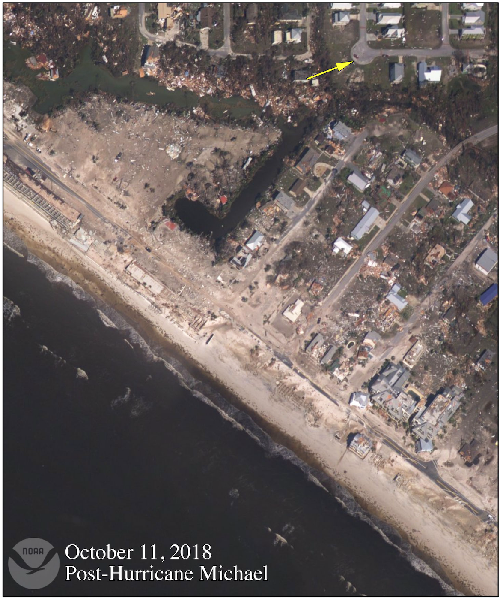

SEE THE TRANSFORMATION


OVER THE PAST SEVEN YEARS
IN DISASTERS FUNDING TO COMMUNITIES JUST LIKE YOURS
Supporting communities affected by ice storms, floods, and natural disasters with coordinated volunteer relief efforts.

"QUOTE FROM MAYOR"Mayor of WaterValley, Community Leader, Yalaboushae
Emergency response and cleanup for the February 2025 ice storm
Fill out a simple volunteer form or make a direct donation. No account needed—just your willingness to make a difference.
Every volunteer hour you contribute generates $50/hour in recovery funding for essential cleanup and restoration work.
Track real-time progress as our community comes together. Your contribution directly funds the recovery efforts that rebuild lives.
When disaster strikes your hometown, we're there. Our volunteer network spans multiple states, bringing rapid response and coordinated relief efforts to communities in need.
As a community-focused organization, we understand that the power of investment in local recovery is undeniable. We've seen firsthand how coordinated volunteer efforts can transform devastated areas into thriving communities once again.
The power of community action is unstoppable.
Every volunteer hour and donation brings us closer to full recovery. Join our community of helpers and be part of the solution.
Get Started →